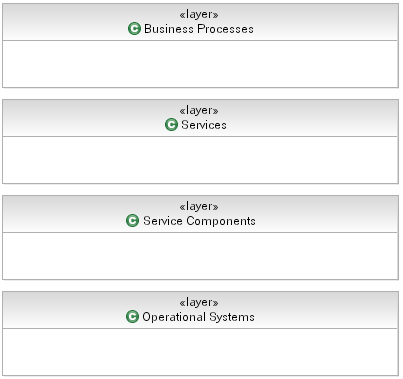
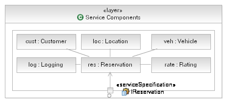

Layering offers the following benefits:
-
Layers help to bring quality attributes of modifiability and portability to an IT system. A change to a lower layer
that does not affect its interface will require no change to a higher layer. For example, any J2EE™ compliant
application server that conforms to the J2EE™ standard may be freely substituted without change to
application-level software. A change to a higher layer that does not affect what facilities it requires from lower
layers will not affect any lower layer. In general, changes to a layered software system that affect no interface
are confined to a single layer.
-
Layers are part of the blueprint role that architecture plays for constructing the system. Knowing the layers in
which their software resides, developers know what services they can rely on in the coding environment. Layers may
define work assignments for development teams (although not always).
-
Layers are part of the communication role played by architecture. In a large system, the number of dependencies
among modules expands rapidly. Organizing the software into layers with interfaces is an important tool to manage
complexity and communicate the structure to developers.
-
Layers help with the analysis role played by architecture. They can be used for analyzing the impact of changes to
the design.
Layering can be strict or non-strict. A strict layering scheme means that components can only use components in the
same layer or layers immediately below them. A non-strict layering scheme means components can use components in the
same or any lower layer. Note that as a general rule, however, components should not be allowed to use
components in upper layers. If components have dependencies on components in higher layers, then it becomes difficult
to replace the upper layer components without having to change the lower layer components. For more information,
including techniques for modeling layers, see Concept: Solution Partitioning.
An important point to note software layers are not the same as tiers. Allocation to machines in a distributed
environment, data flow among elements, and the presence and utilization of communication channels all tend to be
expressed in tier pictures which maybe indiscernible from layer diagrams. Tier diagrams tend to show two-way arrows
indicating bi-directional communication of some sort. Bi-directional (symmetric) communication is bad news in a layer
diagram. Further, assignment of a component to a tier is based on the placement rules considered when defining the
Operational architecture and is defined by the required service level characteristics of the system. The main
difference between layering diagrams and tier pictures is that the former has no notion of placement while the latter
clearly has.
Layering rules-of-thumb
-
All components that provide application-independent business functionality could go in one layer.
Application-independent business functions are things like "customer management" and "product management" that
apply to a range of different applications.
-
All components that provide technical functions, such as error handling, authentication, logging and audit could go
in another (logical) layer. These components are both business and application independent. In some cases,
proximity of technical to functional components may require they be placed in a common layer. These are
architectural decisions and need to be documented as such.
-
Middleware components such as message queuing and relational DBMS software could go in a further layer. This is
also referred to as the "Fabric".
Example
The following is a layered view of an SOA showing typical (and indeed recommended) layers for the different elements
present in a solution.

Now, in this layering scheme it is reasonably simple to realize where our components will reside, we place the relevant
components for our Rent-a-Car example into the Service Components layer, as shown below. Note that we wish
to employ strict layers in our model and so we utilize UML Composition to contain our components in the Service
Component layer and only expose the functionality of the Service Components using delegate ports where the port
provides the same interface as the Service Component itself.

|